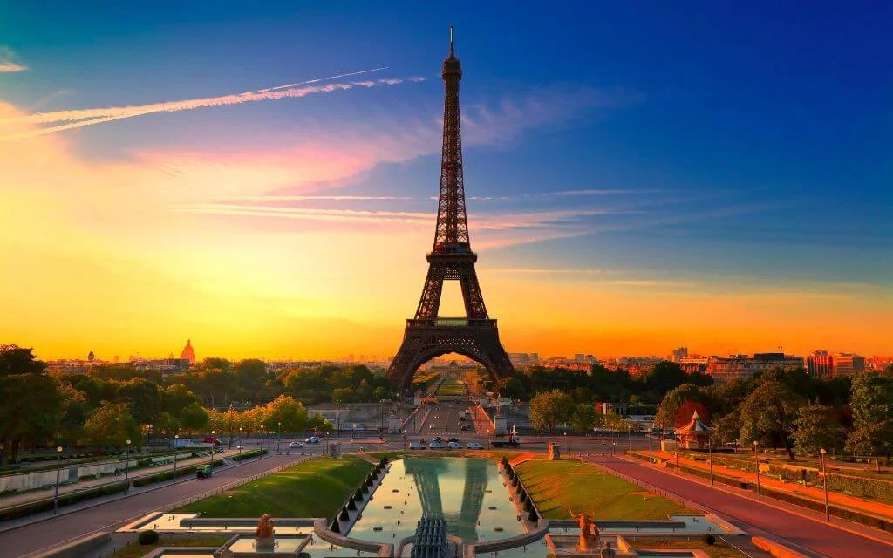

City tax - от 3€ до 7€ (местный налог, оплачивается в автобусе руководителю группы по требованию отеля) Обязательная доплата за наушники - 2€/день/аренда (оплачивается в автобусе руководителю группы) С 2017 года начал действовать безвизовый режим. Для поездки в 34 европейские страны Гражданам Украины следует иметь только биометрический паспорт. 
- Если в один тур едет семья* (2 взрослых + 1 ребенок (до 11,99)), то ребенка предоставляются бонусы: бесплатные факультативные экскурсии при покупке в туре (не распространяется на обязательную экскурсию и депозит). Дополнительно оплачиваются только входные билеты и трансфер, если таковые имеются. Главное условие: оба взрослых должны взять экскурсию. Если на экскурсию идет один взрослый - бонус не предоставляется.
Если едет семья* (2 взрослых + 2 ребенка, 3 ребенка (до 11,99)) только один ребенок получает бесплатные экскурсии, а другие оплачивают 50% от стоимости экскурсии.
Исключение: ребенок полностью платит за экскурсию, если это детские парки развлечений.
Скидки на тур: дети до 11,99 лет - 10% скидка от стоимости тура.
Обязательный депозит или обязательная экскурсия в акционных турах! Депозит (или экскурсия) являются обязательными при бронировании тура по акционной цене. Если тур приобретен по стандартной цене, депозит (или обязательная экскурсия) не оплачиваются. Если турист не воспользовался депозиту в период тура или не использовал его в полной мере, остаток средств НЕ возвращается. Места в автобусе распределяются по мере поступления заявок и указываются в Инфолисте. Туроператор оставляет за собой право изменять количество, порядок и время экскурсий или заменять их на равноценные. Туроператор оставляет за собой право вносить изменения в программу тура без изменения общего количества услуг. Программа тура может меняться на Новый Год, Рождество, Майские праздники.
Стоимость факультативов может меняться в зависимости от количества туристов в группе. Минимальное количество на факультативные екскурсии - 20 чел. Туроператор не несет ответственности за работу таможенных и пограничных служб, а также за пробки и ремонты на дорогах, погодные условия.